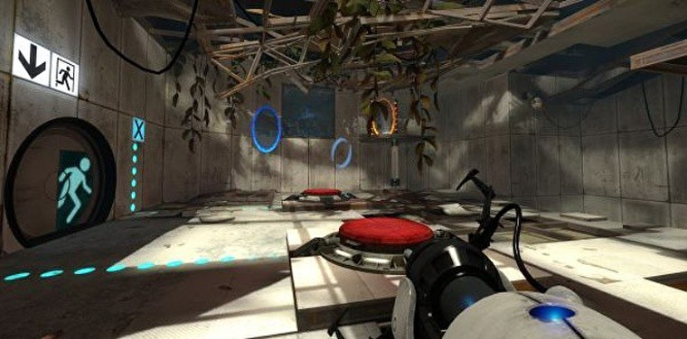
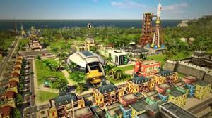
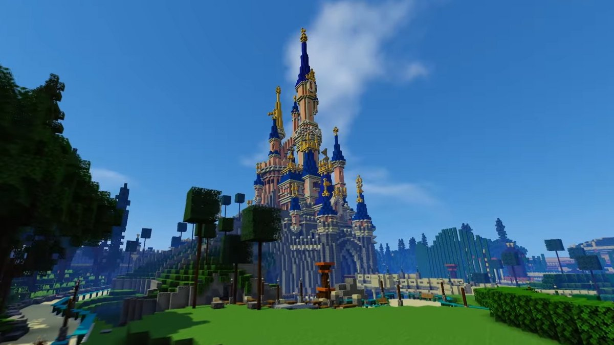

Mes jeux vidéo préférés:
Je vais vous présenter mes jeux préférés sous forme d'un tableau. Si vous êtes interressé cliquer sur l'image !
| Le nom du jeu | Aperçu | Theme du jeu | Petite description du jeu | Prix du jeu |
|---|---|---|---|---|
| Cities: Skylines |  |
Gestion | Gestion et création de villes parfois tirées par les cheveux | 27,99 € |
| Portal 2 |  | Puzzle | Nous devons résoudre des puzzles qui manie gravité et surréalisme pour fuir d'un complexe scientifique abandonné | 8,19 € |
| Tropico 5 |  | Gestion | Gestion et création d'une île commençant à l'époque coloniale en passant par les guerres mondiales et froide jusqu'au monde moderne actuel | 19,99 € |
| Don't Starve Together |  |
Survie | Survivre dans un monde ou règne monstres et famine n'est pas toujours facile, voir même toujours difficile | 14,99 € |
| Minecraft |  | Survie, aventure, création, etc | Ai- je vraiment besoin de le présenter ? Juste c'est plus amusant à plusieurs | 23,95 € |
Voici quelques uns de mes jeux préférés car si je les mettaient tous à mon avis le tableau serait beaucoup trop grand (au moins 10 km XD) mais en voici un petit peu plus pour votre information : Two Point Hospital, Human Fall Flat, Oxygen Not Included, BattleBlock Theatre, BeamNG.drive Vous pouvez retrouver tous ces jeux (sauf Minecraft) sur Steam. Et petits tips : si vous voulez avoir vos jeux moins cher aller sur Instant Gaming !